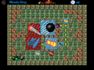
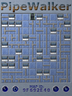

Jeux
(paquetage Debian)
URL |
Commentaire |
Copie d'écran |
Battle of Wesnoth
(wesnoth)
http://www.wesnoth.org |
Jeu de stratégie vu de haut, à tour de rôle. |
|
Battle of Survival
(bos)
http://bos.seul.org |
Jeu de stratégie en temps réel vu de haut, basé sur le moteur stratagus. |
|
Boson
(boson)
http://boson.eu.org |
Jeu de stratégie en temps réel, ressemble à Command and Conquer. |
|
Freeciv
(freeciv)
http://fr.freeciv.wikia.com/wiki/Accueil |
Jeu de stratégie à tour de rôle, en 3D isométrique. |
|
Globulation
(glob2)
http://globulation2.org/wiki/Fr:Main_Page |
Jeu de stratégie en temps réel, vu de haut. |
|
FreeLords
(indisponible en paquetage Debian, fourni en .rpm)
http://freelords.sourceforge.net |
Repris de WarLords - non testé car après installation
à partir du .rpm (commande alien -i, paquetage alien), le programme
réclame des librairies indisponibles. |
<pas d'image> |
Trophy
(indisponible en paquetage Debian, fourni en .rpm)
http://trophy.sf.net |
Jeu de voiture vu du dessus, ressemble à SuperSprint. Sur Debian Testing (mars 2007) je
ne suis pas parvenu à le faire fonctionner - non testé donc. |
<pas d'image> |
pyRacerz
(pyracerz)
http://pyracerz.sourceforge.net |
Jeu de voiture vu du dessus, ressemble à SuperSprint. |
|
Frozen Bubble
(frozen-bubble)
http://www.frozen-bubble.org |
Le jeux incontournable sur Linux. Il faut associer les bulles par couleur pour les faire tomber. |
|
Wormux
(wormux)
http://www.wormux.org |
Jeu de type Worms (tactique à tour de rôle), où il faut détruire les vers de l'adversaire. |
|
Pingus
(pingus)
http://pingus.seul.org |
Jeu de type Lemmings. Il faut aider des petits pingouins à atteindre la sortie à l'aide d'outils
variés. |
|
Liquidwar
(liquidwar)
http://www.ufoot.org/liquidwar/v5 |
Jeu de type Surround ou Tron (les règles sont différentes). Il faut entourer l'adversaire. |
|
Kobo Deluxe
(kobodeluxe)
http://www.olofson.net/kobodl |
Jeu de type Shoot'em up. |
|
Critical Mass
(criticalmass)
http://criticalmass.sourceforge.net |
Jeu de type Shoot'em up. |
|
Supertux
(supertux)
http://supertux.lethargik.org |
Jeu de plateau.
Peut faire appel à OpenGL si on le souhaite. |
|
Tuxpuck
(tuxpuck)
http://home.no.net/munsuun/tuxpuck |
Jeu de type Pong, en plus moderne. |
|
Ri-li
(ri-li)
http://ri-li.sourceforge.net |
Diriger un train qui augmente en longueur (rappelle nibble). |
|
Enigma
(enigma)
http://www.nongnu.org/enigma |
Jeu de mémorisation. |
|
Clan Bomber
(clanbomber)
http://clanbomber.sourceforge.net |
Poursuite avec armes dans un labyrinthe. |
 |
Monster Masher
(monster-masher)
http://people.iola.dk/olau/monster-masher |
Jeu de type Pengo, il faut pousser des blocs pour tuer les monstres. |
|
Mirror Magic
(mirrormagic)
http://www.artsoft.org/mirrormagic |
Jeu de miroirs à incliner pour diriger un faisceau. |
 |
PyTraffic
(indisponible en paquetage Debian, fourni en .rpm)
http://alpha.uhasselt.be/Research/Algebra/Members/pytraffic |
Jeu de type Taquin (les règles sont différentes) avec des blocs rectangulaires
représentant des voitures.
Paquets RPM (pour i386) : pytraffic-2.5.4-3.i386.rpm et pytraffic-themes-2.5.4-3.i386.rpm.
Utiliser alien -i (paquetage alien) pour installer les .rpm. |
|
Blinken
(blinken, installé automatiquement par KDE)
http://edu.kde.org/blinken |
Jeu de type Simon. Il faut mémoriser et reproduire une succession de couleurs (et sons)
qui va en augmentant. |
|
Biloba
(biloba)
http://perso.orange.fr/biloba |
Jeu de réflexion pour 2, 3 ou 4 joueurs, avec possibilité de jouer contre l'ordinateur. |
|
PipeWalker
(pipewalker)
http://pipewalker.sourceforge.net |
Jeu de réflexion pour 1 joueur. Relier tous les ordinateurs au réseau en faisant tourner les liens. |
 |
Secret Maryo Chronicles
(smc)
http://www.secretmaryo.org |
Mario en 2D |
|


{kind=link}
{kind=link}
{kind=link}
{kind=link}
{kind=link}
{kind=link}
{kind=link}
{kind=link}
{kind=link}
{kind=link}
{kind=link}
{kind=link}
{kind=link}
{kind=link}
{kind=link}
{kind=link}
{kind=link}
{kind=link}
{kind=link}
{kind=link}
{kind=link}
{kind=link}
{kind=link}
{kind=link}
{kind=link}
{kind=link}
{kind=link}
{kind=link}
{kind=link}
{kind=link}
{kind=link}
{kind=link}
{kind=link}
{kind=link}
{kind=link}
{kind=link}
{kind=link}
{kind=link}
{kind=link}
{kind=link}
{kind=link}